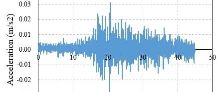

20181125新疆博尔塔拉州博乐市4.9级地震破坏力分析
致谢和声明：
感谢中国地震台网中心为本研究提供数据支持。本分析仅供科研使用，具体灾情和灾损分析应根据现场调查情况确定。
一、地震情况简介
北京时间2018年11月25日20时23分在新疆博尔塔拉州博乐市（北纬44.68度，东经81.50度）发生4.9级地震，震源深度22千米。
二、强震记录及分析
65YJT台站位置为北纬44.86度，东经84.80度(图1)，记录到水平向地震动峰值加速度为3.1cm/s2，竖直向地震动峰值加速度为1.2 cm/s2，该地震动加速度时程如图1所示。本次地震记录到的地震动PGA很小。

图1 65YJT台站位置

(a) EW

(b) NS

(c) UD
图2 65YJT台站地面运动记录

图3 65YJT台站记录反应谱
图4为根据2018年11月25日新疆博尔塔拉州博乐市4.9级地震震中附近范围内台站记录分析得到的建筑震害分布示意图。点击“阅读原文”可以查看网页版地震力分布图。

图4 2018年11月25日新疆博尔塔拉州博乐市4.9级地震台站地震记录破坏力分布图

郑哲

程庆乐
相关研究
长按识别二维码，关注我们的科研动态